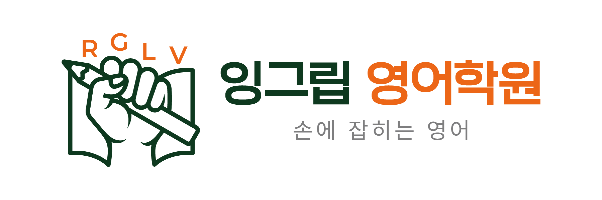

GRIP
진단 · 복습 · 자기화 · 증명
현재 위치와 빈틈을 찾고 혼자 다시 풀 수 있을 때까지 완성합니다.
MATH GRIP
진단부터 수업 문제풀이 코칭, 그립성취점수와 MyGrip 공유까지 한 흐름으로 확인합니다.

ENG GRIP
레벨 진단부터 직접 쓰기, MBA 백지테스트와 문장발표·보카킹까지 실제 결과를 봅니다.


정답만 옮겨 적으면 같은 실수가 반복됩니다. 계산, 개념, 조건 해석, 풀이 순서 중 어디에서 막혔는지 표시합니다.

모든 문제를 똑같이 반복하지 않습니다. 틀린 원인에 맞춰 개념 복습, 유사 문제, 재시험을 다르게 연결합니다.